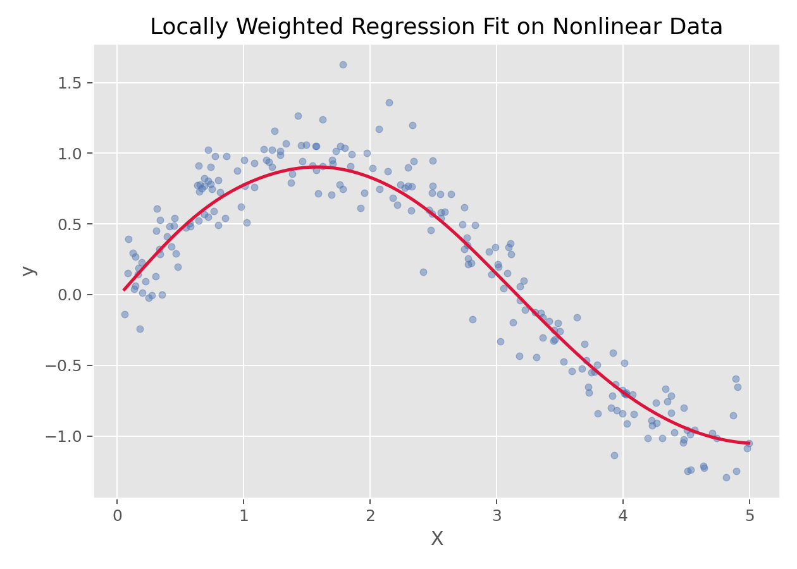

回归与广义线性模型 · 03·08
局部加权回归
Locally Weighted Regression
局部加权回归（Locally Weighted Regression）
§1
方法概览
1.1 定义
局部加权回归是一种在每个预测点附近单独拟合局部模型的非参数回归方法，距离预测点越近的样本权重越大。
1.2 它主要解决什么问题
- 研究问题：当整体上不存在一条统一规律、而不同区域有不同局部趋势时，如何进行平滑拟合。
- 适用任务：局部趋势建模、平滑曲线拟合、小到中等规模非线性回归。
- 常见医学场景：年龄与生理指标的局部变化趋势、时间序列中的平滑信号、局部剂量-反应趋势。
1.3 直觉理解
局部加权回归不是拟合一条固定的全局直线，而是在每个目标点附近“临时”拟合一条最合适的局部线或局部曲线。
§2
数学形式
2.1 核心公式
对某个待预测点 $x$，定义加权最小二乘目标：
$$ J(\theta)=\frac{1}{2}\sum_{i=1}^{m} w^{(i)}\left(h_\theta(x^{(i)})-y^{(i)}\right)^2 $$
常用权重函数为高斯核：
$$ w^{(i)}=\exp\left(-\frac{(x-x^{(i)})^\top(x-x^{(i)})}{2\tau^2}\right) $$
其加权最小二乘解可写为：
$$ \theta=(X^\top W X)^{-1}X^\top W y $$
2.2 参数或统计量含义
- $\tau$：平滑参数（带宽）。
- $W$：权重对角矩阵。
- 局部性：每个预测点都有自己的一套权重和局部模型。
2.3 关键假设
- 目标函数在局部区域内可被低阶模型近似。
- 带宽选择对结果影响很大。
- 数据量不能太大，否则逐点拟合成本较高。
§3
数据形式与输入输出
3.1 适合的数据形式
- 自变量类型：一个或少数几个连续变量最典型。
- 因变量类型：连续型。
- 数据结构：低维宽表或一维曲线数据。
- 是否适合高维数据：不适合高维默认使用。
- 是否适合缺失较多数据：需先处理缺失值。
- 是否适合删失数据：不适合。
- 是否适合重复测量数据：不直接适合。
3.2 示例表格
一个典型的局部平滑回归表格如下：
| X | y |
|---|---|
| 0.026 | 0.045 |
| 1.126 | 0.735 |
| 1.392 | 0.979 |
| 1.501 | 1.123 |
| 1.515 | 0.756 |
| 2.340 | 0.636 |
3.3 输入与产出
输入
- 输入数据：连续结局和少量连续特征。
- 关键变量：带宽
tau / span、局部多项式阶数。 - 需要预处理的内容：必要时标准化、异常值检查。
产出
- 模型对象/统计结果：局部拟合曲线。
- 参数估计：通常不强调全局参数。
- 预测结果：连续型局部平滑预测值。
- 不确定性指标：常通过重抽样或局部误差评估。
§4
适用场景
- 适合：局部趋势明显、曲线较平滑、低维非线性问题。
- 不适合：高维数据、超大样本、需要简单全局模型解释时。
- 使用前需要特别检查的点：带宽选择、边界效应、计算成本。
§5
实现
常用包：
numpystatsmodels
import numpy as np
def local_weighted_predict(query, X, y, tau=0.5):
w = np.exp(-((X - query) ** 2) / (2 * tau ** 2))
W = np.diag(w.ravel())
X_design = np.c_[np.ones(len(X)), X]
theta = np.linalg.pinv(X_design.T @ W @ X_design) @ X_design.T @ W @ y
return np.array([1, query]).dot(theta)
常用包：
stats
fit <- loess(y ~ x, data = df, span = 0.4, degree = 1)
pred <- predict(fit, newdata = data.frame(x = x_grid))
§6
结果如何解释
- 核心结果看什么：平滑曲线形状、带宽对拟合的影响。
- 每个主要参数如何解释：相比系数，更重要的是局部趋势。
- 临床或医学意义如何表达：适合表达“某区间内趋势如何变化”。
- 常见误读：局部加权回归的结果高度依赖带宽，不同带宽下曲线会明显变化。
§7
推荐可视化
- 原始散点图 + 局部平滑曲线。
- 不同带宽下的曲线对比图。
- 局部权重示意图。
7.1 图像示例
下图展示局部加权回归在非线性数据上的平滑拟合曲线，能够很好反映不同区域的局部趋势。

§8
优势、局限与常见坑
优势
- 对局部非线性关系很灵活。
- 不要求单一全局模型形式。
- 拟合结果直观。
局限
- 计算成本较高。
- 高维效果差。
- 带宽选择敏感。
常见坑
- 带宽过小导致过拟合。
- 带宽过大又退化成过于平滑的全局趋势。
- 在高维问题中仍试图直接使用。
§9
与相近方法的区别
- 和 KNN 回归的区别：KNN 侧重邻域均值，局部加权回归会在邻域内拟合局部模型。
- 和多项式回归的区别：多项式回归是一条全局曲线，局部加权回归是逐点局部拟合。
- 和高斯过程回归的区别：高斯过程在函数空间里全局建模，局部加权回归更强调局部加权拟合。
§10
医学研究中的典型应用
- 局部平滑剂量-反应曲线。
- 年龄或时间与连续指标的局部趋势展示。
- 低维信号的平滑拟合。
§11
相关方法
§12
参考资料
- Cleveland WS, Devlin SJ. Locally weighted regression: an approach to regression analysis by local fitting. J Am Stat Assoc. 1988;83(403):596-610.
- R Core Team.
loess. R Manual. https://stat.ethz.ch/R-manual/R-devel/library/stats/html/loess.html （访问日期：2026-07-02）
— 黑盒词典 · 03·08 —